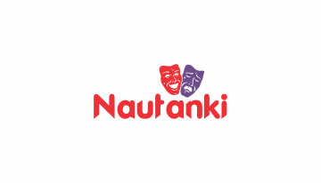
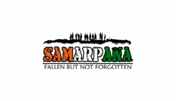

Nautanki
The dramatics Club brings together students interested in stage play, street play and mime. The Club conducted street plays at various college festivals. The present membership is 40 and is open to all students subject to performance in the auditions.
View More....Samarpana
A Student initiative to create awareness about martyrs of Indian Armed Forces & encourage civilians to remember, pay their respects to them. As the younger generation, it is our responsibility to appreciate the efforts of those who have contributed and sacrificed for us and as a civilized society, contribute something in return.
View More....CSR

The Collegiate Social Responsibility Club of PES University, has been striving towards its aim of service to the less fortunate.
View More....